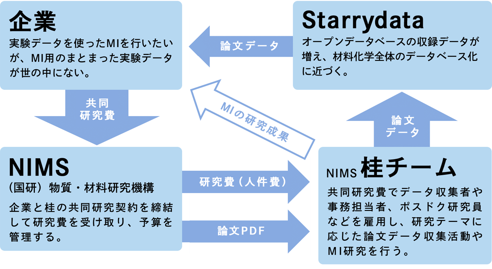
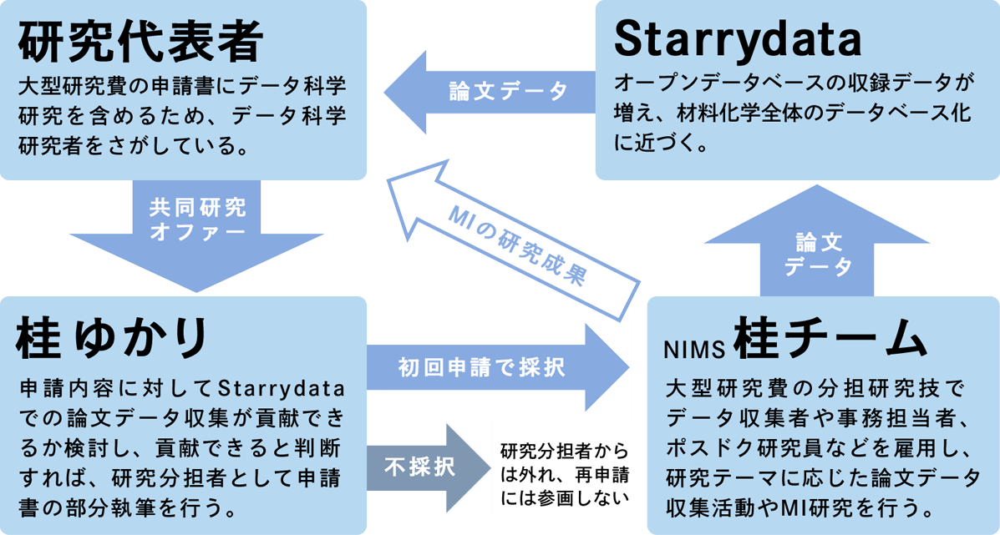

共同研究
Starrydataプロジェクトとの共同研究
Materials Informatics(MI)はデータ科学を活用して新材料を開発するという 新しい研究分野です。そんな中、私達のStarrydataプロジェクトに関心を持っていただき、共同研究を申し込んでくださる企業様やアカデミアの研究者様が多くいらっしゃいます。
そこで、Starrydataのプロジェクトリーダーである桂ゆかりや私達Starrydataチームが、どのような活動をしていて、どのようなコラボレーションができるかについてまとめてみました。
Starrydataプロジェクトについて
目的
Starrydataでは、無機材料科学の論文に掲載された実験データのグラフから、元の数値データをデジタル形式で抽出することで、オープンデータベース（無料データベース）を作っています。これにより、過去の研究者たちが集めた膨大な実験データを、再利用して研究に生かすことができます。
データベースがあることで、研究分野全体の実験データを一望して材料科学の世界を俯瞰することができます。また、機械学習などの最新のAI技術の活用によって新しい材料科学を切り拓くこともできます。
チーム体制
Starrydataプロジェクトは、2015年に桂ゆかり（当時：東京大学助教）が発案し、熊谷将也氏（当時：大阪大学博士課程2年）と2人で始めた、草の根の研究プロジェクトです。
少しずつメンバーを増やしていき、2022年3月現在、桂が現在所属しているNIMSなどを拠点として、Webエンジニア1名とデータ収集者6名、マネジメント担当者1名の10名体制で活動しています。
世界中のデータをデータベース化するにはもっと大きなチームが必要なので、このチームは、これからもっと大きくしていきます。海外の大型AIプロジェクトのように数百人、数千人のデータ収集者を雇用することは難しいですが、少なくとも数十名体制のチームを作りたいと思っています。
活動資金
Starrydataのデータ収集活動に必要なのは、チームのWebエンジニアやデータ収集者、マネジメント担当者に支払う給与です。もし研究費が途切れてしまうと、せっかく技術を身に着けたデータ収集者さんが、チームを去らなければいけなくなってしまいます。そしてこれからチームが大きくなるほど、必要な費用が増えていきます。
このための活動資金は、研究機関の研究費や国の競争的研究資金、民間の競争的研究資金、それから企業様との共同研究（4社）によって支えられてきました。単年度で終わってしまう研究費も多いため、Starrydataを活用した新しい共同研究プロジェクトを毎年積極的に受け入れております。
共同研究の形態
企業との共同研究
MIを行うための大規模実験データがほしい企業様と、共同研究を行っています。初めに申請内容を伺い、Starrydataによる論文データ収集が貢献できそうなプロジェクトであるか判断します。
もし本質的な形で貢献できそうであれば、NIMSで共同研究契約を締結します。いただいた研究費（人件費）でデータ収集者を雇用して、そのデータ収集者が論文から実験データを収集して、Starrydata webシステムにオープンデータとしてアップロードします。
これは学術的なオープンデータなので、1企業で独占することはできませんが、欲しいデータが手に入ること、データ収集対象やデータフォーマットの策定に関われること、競合他社に先駆けてMI技術を磨けることが共同研究のメリットだとお考えください。

Starrydataと企業の共同研究の枠組み
アカデミア研究者との共同研究
大型研究費の申請にあたってMIを始めたい研究者様と、共同研究をしております。初めに申請内容を伺い、Starrydataによる論文データ収集が貢献できそうなプロジェクトであるか判断します。本質的な形で貢献できそうであれば、研究分担者として桂が申請書に名を連ね、担当部分の申請書を部分執筆します。
研究費が採択された場合には、人件費をいただいてデータ収集者やマネジメント担当者を雇用します。この研究の過程で集めたデータはStarrydataにオープンデータとして収録され、他の研究参加者も自由に使うことができます。本格的なデータ科学研究も私達が行う場合は、ポスドクまたはエンジニアの人件費も配分していただくか、熱意のある学生さんをご紹介していただくのが確実です。
なお、もし最初の申請で不採択となった場合は、再申請のメンバーからは辞退させていただきますので、ご了承よろしくお願いします。

Starrydataとアカデミアの研究者との共同研究の枠組み